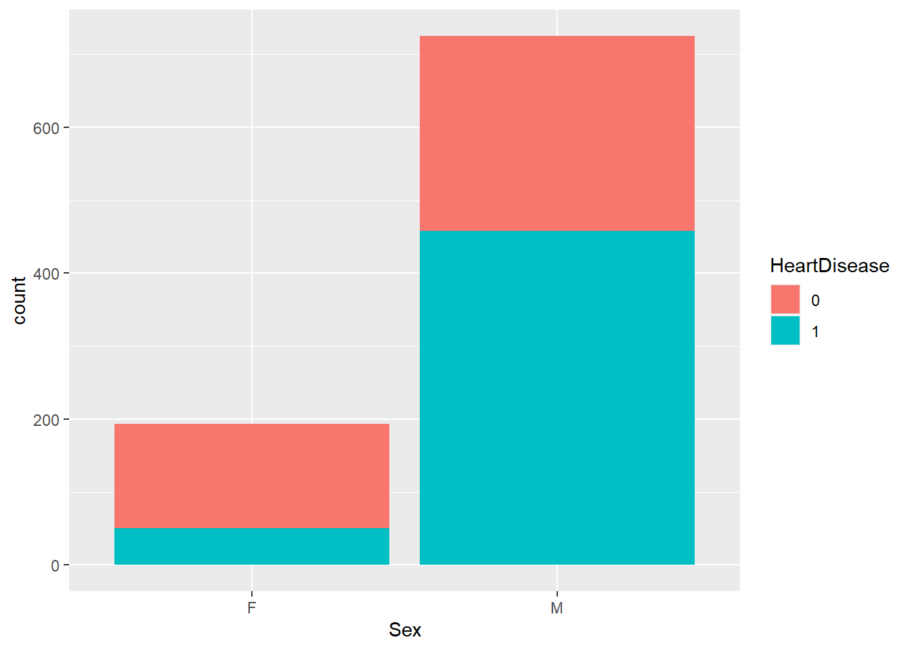
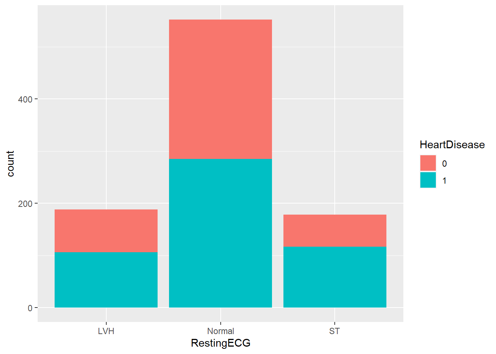
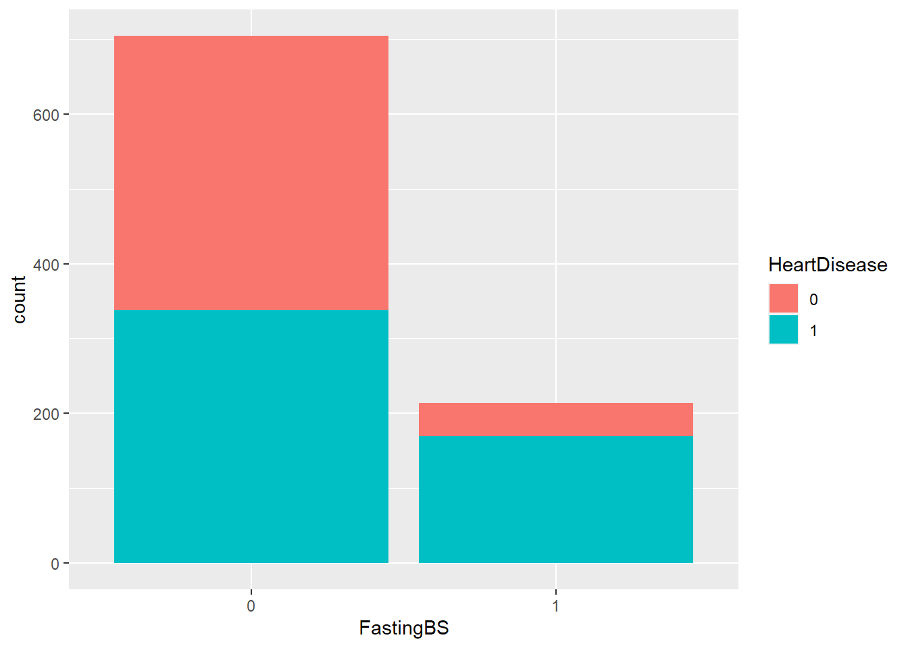
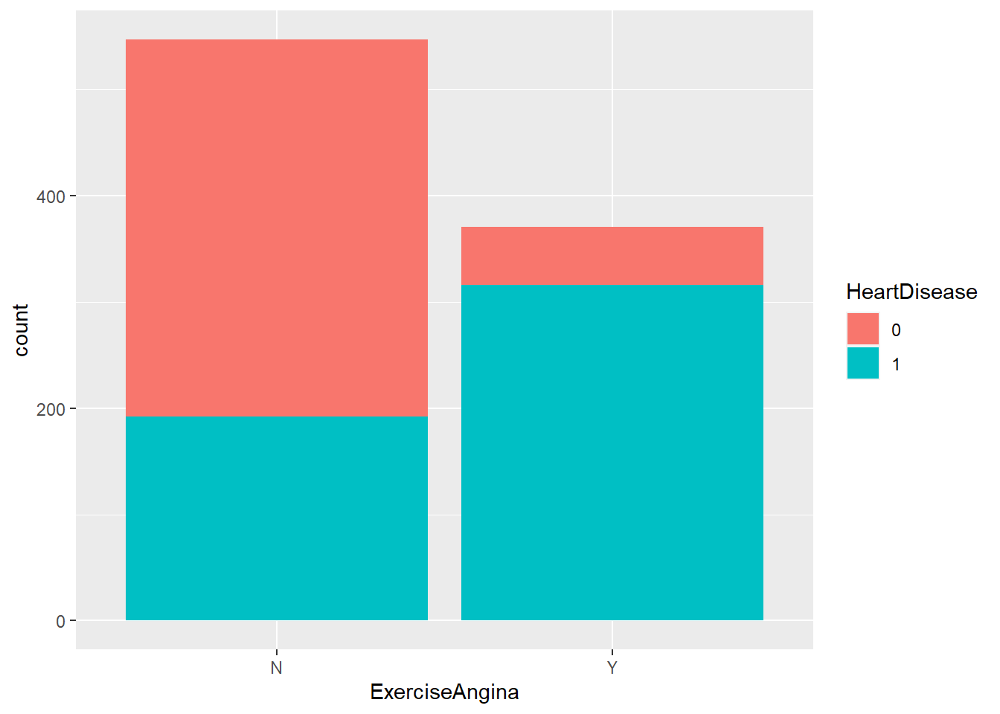
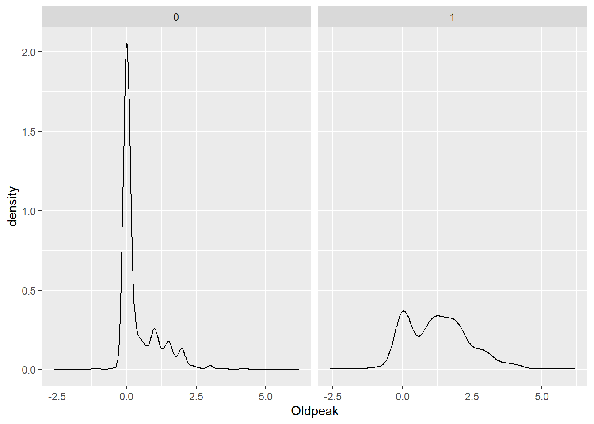
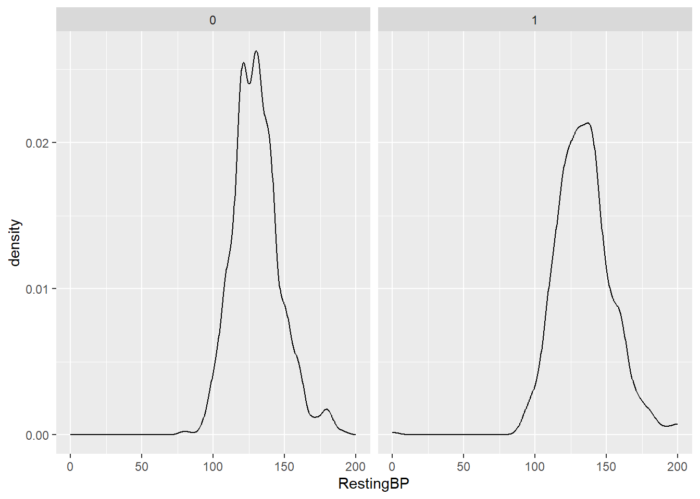
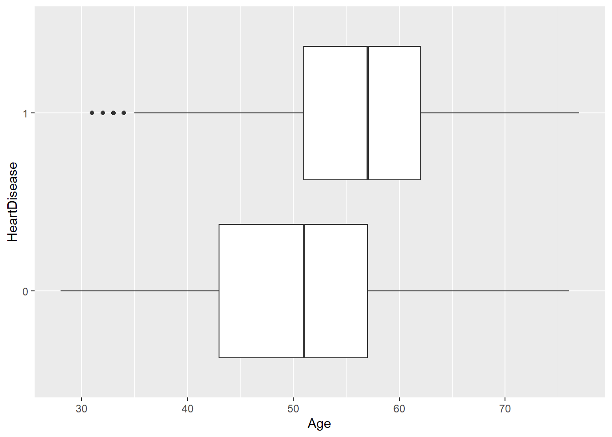
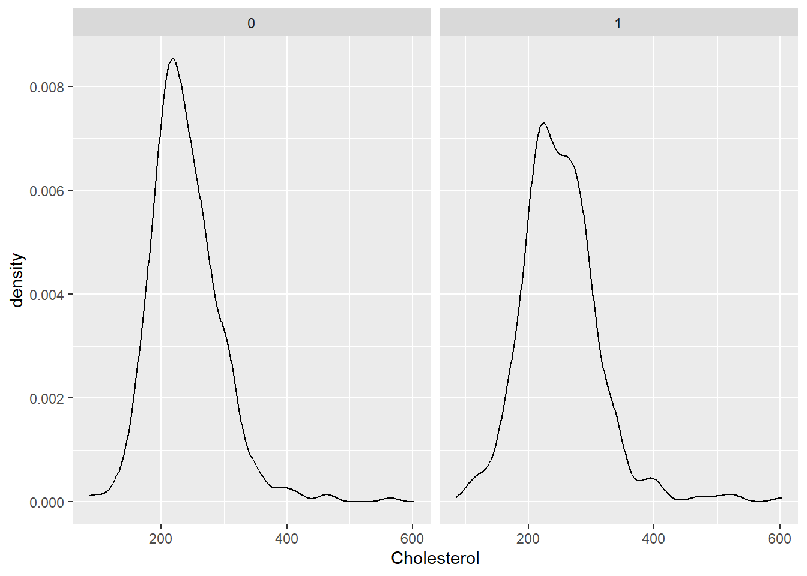
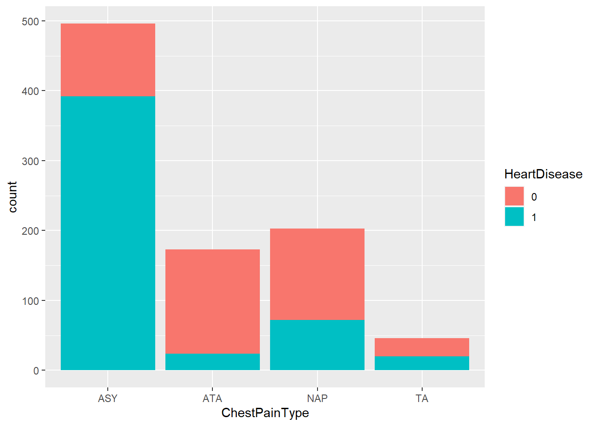

library(tidyverse)
#Read in the heart dataset.
heart_data <- read_csv("heart.csv")ST 558 Homework 5
Task 1: Conceptual Questions
Question 1: What is the purpose of using cross-validation when fitting a random forest model?
The purpose of using cross validation when fitting a random forest model is to find mtry - the tuning parameter. This represents the random subset of predictors that is used in the model.
Question 2: Describe the bagged tree algorithm.
The bagged tree algorithm represents bootstrap aggregation. The idea is that you get a bootstrap sample, train tree on this sample, and then resample with replacement and repeat the process B number of times. Then your final prediction is an average of these predictions if using a regression tree or use a majority vote (among other options) for classification trees. This method is more ideal than a single tree because it decreases the variability in the predictions.
Question 3: What is meant by a general linear model?
A general linear model is a model that has a continuous response variable and allows for both continuous and categorical predictors. This could be a simple linear regression, multiple linear regression, among others. But the response and errors follow a normal distribution, which makes it different from a generalized linear model where those can come from non-normal distributions.
Question 4: When fitting a multiple linear regression model, what does adding an interaction term do? That is, what does it allow the model to do differently as compared to when it is not included in the model?
Adding an interaction term allows you to add a term that accounts for the relationship between two predictor variables through using the notation x1:x2. Then, you can fit a “best saddle” through the points, rather than simply a best plane. This enables you to have a more flexible surface to fit to the data and make predictions.
Question 5: Why do we split our data into a training and test set?
We split our data into a training and a test set so that we can train/fit the model on part of the data and then test how well the model is performing on the other part of the data. By doing this, we ensure that we are not overfitting the model to the data we have and that the model can generalize to data it hasn’t yet seen.
Read in the dataset.
Quick EDA/Data Preparation - Questions 1 and 2.
Based on the EDA that follows, it appears that the following predictors have the strongest relationship to heart disease: Categorical: ChestPainType, Sex, FastingBS, ExerciseAngina and Numeric: MaxHR, Oldpeak. I will focus on some of these variables in the models that follow.
#Write over the heart dataset. Remove the ST_Slope column and convert the HeartDisease and FastingBS columns to factors.
heart_data <- heart_data |>
select(-ST_Slope) |>
mutate(HeartDisease = as.factor(HeartDisease),
FastingBS = as.factor(FastingBS))
#Print the first few rows of the dataset to check that it is working correctly.
head(heart_data)# A tibble: 6 × 11
Age Sex ChestPainType RestingBP Cholesterol FastingBS RestingECG MaxHR
<dbl> <chr> <chr> <dbl> <dbl> <fct> <chr> <dbl>
1 40 M ATA 140 289 0 Normal 172
2 49 F NAP 160 180 0 Normal 156
3 37 M ATA 130 283 0 ST 98
4 48 F ASY 138 214 0 Normal 108
5 54 M NAP 150 195 0 Normal 122
6 39 M NAP 120 339 0 Normal 170
# ℹ 3 more variables: ExerciseAngina <chr>, Oldpeak <dbl>, HeartDisease <fct>#Check for missing values. It appears there are no missing values, although some have values of 0 in them. These will be dropped later if I end up using these variables.
missing_vals <- colSums(is.na(heart_data))
missing_vals Age Sex ChestPainType RestingBP Cholesterol
0 0 0 0 0
FastingBS RestingECG MaxHR ExerciseAngina Oldpeak
0 0 0 0 0
HeartDisease
0 #Make a stacked bar chart of heart disease by gender.
#It appears males get heart disease more frequently than females.
ggplot(heart_data, aes(x = Sex, fill = HeartDisease)) +
geom_bar()
#Make a stacked bar chart of heart disease by RestingECG
#It appears those with a RestingECG of ST or LVH are more likely to have heart disease.
ggplot(heart_data, aes(x = RestingECG, fill = HeartDisease)) +
geom_bar()
#Make a stacked bar chart of heart disease by fasting blood sugar.
#Info from data source: FastingBS: fasting blood sugar [1: if FastingBS > 120 mg/dl, 0: otherwise]
#It appears those with a fasting blood sugar above 120 have a higher likelihood of heart disease.
ggplot(heart_data, aes(x = FastingBS, fill = HeartDisease)) +
geom_bar()
#Make a stacked bar chart of heart disease by Exercise Angina.
#It appears those with Exercise Angina are more likely to have heart disease.
ggplot(heart_data, aes(x = ExerciseAngina, fill = HeartDisease)) +
geom_bar()
#Density Plot of Oldpeak faceted by Heart Disease.
#Looks like maybe higher. Not sure if significant. Investigate numerically down below.
ggplot(heart_data, aes(x = Oldpeak))+
geom_density() +
facet_wrap(~HeartDisease)
#Density Plot of Resting BP faceted by Heart Disease.
#It appears that resting BP is slightly higher in those with heart disease.
ggplot(heart_data, aes(x = RestingBP))+
geom_density() +
facet_wrap(~HeartDisease)
#Boxplots of age by heart disease.
#It appears that as age increases, likelihood of heart disease increases as well.
ggplot(heart_data, aes(x = Age, y = HeartDisease)) +
geom_boxplot()
#Boxplots of cholesterol by heart disease.
#Without the missing values, it appears that cholesterol is maybe slightly higher in those with heart disease.
mod_heart <- heart_data |>
filter(Cholesterol > 0)
ggplot(mod_heart, aes(x = Cholesterol))+
geom_density() +
facet_wrap(~HeartDisease)
#Chest pain type and heart disease bar plots.
#It appears that ASY chest pain is a strong indicator of heart disease.
ggplot(heart_data, aes(x = ChestPainType, fill = HeartDisease)) +
geom_bar()
#Means of HR, Age, BP, and chol for those with and without heart disease.
#Group with heart disease has lower max HR, higher age, slightly higher BP, slightly lower Oldpeak, and lower cholesterol.
num_sums <- mod_heart |>
group_by(HeartDisease) |>
summarize(mean_max_hr = mean(MaxHR),
mean_age = mean(Age),
mean_bp = mean(RestingBP),
mean_chol = mean(Cholesterol),
mean_oldpeak = mean(Oldpeak))
num_sums# A tibble: 2 × 6
HeartDisease mean_max_hr mean_age mean_bp mean_chol mean_oldpeak
<fct> <dbl> <dbl> <dbl> <dbl> <dbl>
1 0 149. 50.2 130. 239. 0.394
2 1 131. 55.9 136. 251. 1.46 Creating Dummy Variables - EDA Section #3
I am taking the approach of defining the numeric predictors in one dataset, the target response (HeartDisease) in another, and the dummy variables in another. Then I will use cbind to combine the columns. We are creating dummy variables so that we can use numeric predictors that are essentially classified into catgories in the k nearest neighbors.
#Read in the caret package.
library(caret)
#Save the numeric precitors as num_heart (as well as Fasting Blood Sugar which is technically a factor but doesn't need dummy variables because it's already coded as 0/1).
num_heart <- heart_data |>
select(Age, RestingBP, Cholesterol, MaxHR, Oldpeak, FastingBS)
#Save the target predictor (HeartDisaese) as target_heart.
target_heart <- heart_data |>
select(HeartDisease)
#Create the dummy variables using the dummyVars function from the caret package.
dummies <- dummyVars(HeartDisease ~ Sex + ExerciseAngina + ChestPainType + RestingECG, data = heart_data)
#use predict to create the new columns.
dummy_data <- predict(dummies, newdata = heart_data)
#Combine all the columns using cbind and then print the first few rows of the combined dataset.
heart_final <- cbind(num_heart, dummy_data, target_heart)
head(heart_final) Age RestingBP Cholesterol MaxHR Oldpeak FastingBS SexF SexM ExerciseAnginaN
1 40 140 289 172 0.0 0 0 1 1
2 49 160 180 156 1.0 0 1 0 1
3 37 130 283 98 0.0 0 0 1 1
4 48 138 214 108 1.5 0 1 0 0
5 54 150 195 122 0.0 0 0 1 1
6 39 120 339 170 0.0 0 0 1 1
ExerciseAnginaY ChestPainTypeASY ChestPainTypeATA ChestPainTypeNAP
1 0 0 1 0
2 0 0 0 1
3 0 0 1 0
4 1 1 0 0
5 0 0 0 1
6 0 0 0 1
ChestPainTypeTA RestingECGLVH RestingECGNormal RestingECGST HeartDisease
1 0 0 1 0 0
2 0 0 1 0 1
3 0 0 0 1 0
4 0 0 1 0 1
5 0 0 1 0 0
6 0 0 1 0 0Split your Data
I am going to split the data into a training and a test set using the createDataPartition() function from the caret package. We split into a training/test set so that we can use part of the data that the model wasn’t trained on to evaluate how well the model is doing at predicting.
#Set the seed at 100 for reproducibility.
set.seed(100)
#Use the createDataPartition from the caret package. Get 70% of the rows.
trainIndex <- createDataPartition(heart_final$HeartDisease, p =0.7, list = FALSE)
#Assign those 70% to the training dataset.
subheartTrain <- heart_final[trainIndex, ]
#Assign the rows not selected in the trainIndex (30% of data) to the test dataset.
subheartTest <- heart_final[-trainIndex, ]kNN
Here I am going to implement the k nearest neighbors algorithm for classification. I am going to use the variables: Sex (SexM and SexF as defined above as dummy variables), ChestPainType (ASY, ATA, NAP, and TA), FastingBS, Oldpeak, and ExerciseAngina (ExerciseAnginaY and ExerciseAnginaN).
#Set the train control to repeated 10 fold cross validation with 3 repeats. This will be used later when training the model.
#Set seed for reproducibility.
set.seed(50)
trctrl <- trainControl(method = "repeatedcv", number = 10, repeats = 3)
#Convert to factors.
subheartTrain$HeartDisease <- as.factor(subheartTrain$HeartDisease)
subheartTest$HeartDisease <- as.factor(subheartTest$HeartDisease)
#Use train function on the subheartTrain dataset created above.
#Want the k nearest neighbors method.
#Center and scale using preprocess.
#Create a tune grid data frame from 1 to 40 to pick the best number of neighbors to use.
knn_fit <- train(HeartDisease ~ SexM + SexF + ExerciseAnginaN + ExerciseAnginaY + ChestPainTypeASY + ChestPainTypeATA + ChestPainTypeATA + ChestPainTypeNAP + ChestPainTypeTA + FastingBS + Oldpeak,
data = subheartTrain,
method = "knn",
trControl=trctrl,
preProcess = c("center", "scale"),
tuneGrid = data.frame(k = 1:40))
#It appears that the best fit was using 19 neighbors as this gave the highest accuracy of about 79% on the training dataset.
knn_fitk-Nearest Neighbors
643 samples
10 predictor
2 classes: '0', '1'
Pre-processing: centered (10), scaled (10)
Resampling: Cross-Validated (10 fold, repeated 3 times)
Summary of sample sizes: 579, 579, 579, 578, 578, 580, ...
Resampling results across tuning parameters:
k Accuracy Kappa
1 0.7792969 0.5503523
2 0.7683827 0.5288266
3 0.7829773 0.5582186
4 0.7829766 0.5586004
5 0.7849798 0.5626492
6 0.7694341 0.5324711
7 0.7694419 0.5334508
8 0.7715493 0.5379722
9 0.7689531 0.5326709
10 0.7668948 0.5274799
11 0.7720706 0.5376845
12 0.7788179 0.5514460
13 0.7751793 0.5440735
14 0.7772472 0.5481761
15 0.7814549 0.5568542
16 0.7886907 0.5717352
17 0.7897404 0.5742387
18 0.7897484 0.5738945
19 0.7928579 0.5807644
20 0.7871525 0.5691789
21 0.7907746 0.5771906
22 0.7840516 0.5635058
23 0.7923611 0.5808068
24 0.7892276 0.5746818
25 0.7876651 0.5720678
26 0.7829856 0.5633364
27 0.7861028 0.5699498
28 0.7819034 0.5616568
29 0.7829530 0.5635220
30 0.7782655 0.5542072
31 0.7772642 0.5521009
32 0.7767431 0.5512268
33 0.7756934 0.5493567
34 0.7741552 0.5462315
35 0.7736261 0.5453091
36 0.7715834 0.5416657
37 0.7720391 0.5428916
38 0.7715343 0.5415830
39 0.7746277 0.5481442
40 0.7772001 0.5528067
Accuracy was used to select the optimal model using the largest value.
The final value used for the model was k = 19.#Test the model on the test data set.
knn_predict <- predict(knn_fit, newdata = subheartTest)
confusionMatrix(knn_predict, subheartTest$HeartDisease)Confusion Matrix and Statistics
Reference
Prediction 0 1
0 89 23
1 34 129
Accuracy : 0.7927
95% CI : (0.74, 0.8391)
No Information Rate : 0.5527
P-Value [Acc > NIR] : <2e-16
Kappa : 0.5772
Mcnemar's Test P-Value : 0.1853
Sensitivity : 0.7236
Specificity : 0.8487
Pos Pred Value : 0.7946
Neg Pred Value : 0.7914
Prevalence : 0.4473
Detection Rate : 0.3236
Detection Prevalence : 0.4073
Balanced Accuracy : 0.7861
'Positive' Class : 0
#This correctly predicts heart disease about 79% of the time in the test data set.Logistic Regression
Below I will create three logistic regression models. I will go back to the original data set since I don’t need to use dummy variables when using the glm() function.
Logistic Regression Model #1
The first function will use Sex, ChestPainType, FastingBS, and Exercise Angina as main effect terms, as I found these relevant during my EDA.
#Not using dummy variables so using createDataPartition to select 70% of rows on the original data set.
set.seed(100)
trainIndex <- createDataPartition(heart_data$HeartDisease, p =0.7, list = FALSE)
#Using selected rows on heartTrain.
heartTrain <- heart_data[trainIndex, ]
#Using remaining rows on heartTest.
heartTest <- heart_data[-trainIndex, ]
#Create the train Control using the trainControl function to do repeated cross validation.
set.seed(50)
trctrl <- trainControl(method = "repeatedcv", number = 10, repeats = 3)
#Convert HeartDisease and FastingBS to factor.
heartTrain$HeartDisease <- as.factor(heartTrain$HeartDisease)
heartTest$HeartDisease <- as.factor(heartTest$HeartDisease)
#Fit first logistic regression model using only main interaction terms.
#Use the heartTrain dataset.
#Use method = glm to indicate a generalized linear model.
#Use family = binomial to indicate logistic regression.
#Preprocess the data and use the same 10 fold repeated cross validation as above.
log_fit_1 <- train(HeartDisease ~ ChestPainType + ExerciseAngina + FastingBS + Sex,
data = heartTrain,
method = "glm",
family = "binomial",
preProcess = c("center", "scale"),
trControl = trctrl)
#79.7% accuracy on training set.
log_fit_1Generalized Linear Model
643 samples
4 predictor
2 classes: '0', '1'
Pre-processing: centered (6), scaled (6)
Resampling: Cross-Validated (10 fold, repeated 3 times)
Summary of sample sizes: 579, 579, 579, 578, 578, 580, ...
Resampling results:
Accuracy Kappa
0.7974648 0.5858969Logistic Model #2
#Create a logistic model using interaction of age and sex (and main effects), as well as ChestPainType. Based on EDA, it appeared that all variables had some effect on Heart Disease, although some were stronger predictors than others.
#Same dataset, method, trcontrol, family, etc. as defined above.
#Create the train Control using the trainControl function to do repeated cross validation.
set.seed(50)
trctrl <- trainControl(method = "repeatedcv", number = 10, repeats = 3)
log_fit_2 <- train(HeartDisease ~ Age*Sex + ChestPainType,
data = heartTrain,
method = "glm",
family = "binomial",
preProcess = c("center", "scale"),
trControl = trctrl)
#76.8% accuracy on training set.
log_fit_2Generalized Linear Model
643 samples
3 predictor
2 classes: '0', '1'
Pre-processing: centered (6), scaled (6)
Resampling: Cross-Validated (10 fold, repeated 3 times)
Summary of sample sizes: 579, 579, 579, 578, 578, 580, ...
Resampling results:
Accuracy Kappa
0.767953 0.5286534Logistic Model #3
#Create a logistic model using all possible combinations of ChestPainType and Exercise Angina (since both are related to chest pain), along with Age, Sex, and FastingBS variables.
#Same method, family, etc. as defined above.
#Create the train Control using the trainControl function to do repeated cross validation.
set.seed(50)
trctrl <- trainControl(method = "repeatedcv", number = 10, repeats = 3)
log_fit_3 <- train(HeartDisease ~ ChestPainType*ExerciseAngina + FastingBS + Age + Sex,
data = heartTrain,
method = "glm",
family = "binomial",
preProcess = c("center", "scale"),
trControl = trctrl)
#79.4% accuracy on training set.
log_fit_3Generalized Linear Model
643 samples
5 predictor
2 classes: '0', '1'
Pre-processing: centered (10), scaled (10)
Resampling: Cross-Validated (10 fold, repeated 3 times)
Summary of sample sizes: 579, 579, 579, 578, 578, 580, ...
Resampling results:
Accuracy Kappa
0.7938104 0.581491Pick best logistic model.
Based on the accuracy metric, it appears that the logistic model #1 (using Sex, ChestPainType, FastingBS, and Exercise Angina as main effect terms) has the highest accuracy on the test set at 79.7%. Here is the confusionMatrix for log_fit_1 and a summary of it.
#Basic summary of model.
summary(log_fit_1)
Call:
NULL
Coefficients:
Estimate Std. Error z value Pr(>|z|)
(Intercept) 0.35920 0.11093 3.238 0.0012 **
ChestPainTypeATA -0.82727 0.12417 -6.662 2.69e-11 ***
ChestPainTypeNAP -0.64097 0.10653 -6.017 1.78e-09 ***
ChestPainTypeTA -0.23814 0.09457 -2.518 0.0118 *
ExerciseAnginaY 0.93425 0.11646 8.022 1.04e-15 ***
FastingBS1 0.57607 0.11323 5.088 3.62e-07 ***
SexM 0.52026 0.11121 4.678 2.89e-06 ***
---
Signif. codes: 0 '***' 0.001 '**' 0.01 '*' 0.05 '.' 0.1 ' ' 1
(Dispersion parameter for binomial family taken to be 1)
Null deviance: 883.97 on 642 degrees of freedom
Residual deviance: 557.41 on 636 degrees of freedom
AIC: 571.41
Number of Fisher Scoring iterations: 5#Use confusion matrix on chosen model.
#This model has a 80% accuracy on test set.
confusionMatrix(data = heartTest$HeartDisease, reference = predict(log_fit_1, newdata=heartTest))Confusion Matrix and Statistics
Reference
Prediction 0 1
0 84 39
1 16 136
Accuracy : 0.8
95% CI : (0.7478, 0.8456)
No Information Rate : 0.6364
P-Value [Acc > NIR] : 2.734e-09
Kappa : 0.5882
Mcnemar's Test P-Value : 0.003012
Sensitivity : 0.8400
Specificity : 0.7771
Pos Pred Value : 0.6829
Neg Pred Value : 0.8947
Prevalence : 0.3636
Detection Rate : 0.3055
Detection Prevalence : 0.4473
Balanced Accuracy : 0.8086
'Positive' Class : 0
Tree Models
In this section, I will make three tree models: a classification tree, a random forest, and a boosted tree.
#Load in required libraries.
library(tree)
library(rpart)Classification Tree Model
First I will make a classification tree. The goal of a classification tree is to predict group memebership - heart disease in this case!
#Set seed for reproducibility.
set.seed(50)
trctrl <- trainControl(method = "repeatedcv", number = 10, repeats = 3)
#Create the tuneGrid by making a dataframe of the cp parameter that starts at 0, goes to 0.1 and counts by 0.001.
tune_parameter <- data.frame(cp = seq(0, 0.1, by = 0.001))
#Convert the rest of the cateogorical variables to factors.
heartTrain$Sex <- as.factor(heartTrain$Sex)
heartTrain$ChestPainType <- as.factor(heartTrain$ChestPainType)
heartTrain$RestingECG <- as.factor(heartTrain$RestingECG)
heartTrain$ExerciseAngina <- as.factor(heartTrain$ExerciseAngina)
#Create a classification tree using predictors of Exercise Angina, Chest Pain Type, Sex, MaxHR, and Fasting Blood Sugar.
#Use the heartTrain data set.
#Use rpart for the method.
#Use the train control defined above (repeated 10 fold cross validation) and the tuneGrid defined above.
class_tree <- train(HeartDisease ~ ChestPainType + FastingBS + ExerciseAngina + Sex + MaxHR,
data = heartTrain,
method = "rpart",
trControl = trctrl,
tuneGrid = tune_parameter)
#Accuracy of 78.4% on training set.
class_treeCART
643 samples
5 predictor
2 classes: '0', '1'
No pre-processing
Resampling: Cross-Validated (10 fold, repeated 3 times)
Summary of sample sizes: 579, 579, 579, 578, 578, 580, ...
Resampling results across tuning parameters:
cp Accuracy Kappa
0.000 0.7771913 0.5471617
0.001 0.7787298 0.5504858
0.002 0.7834180 0.5601482
0.003 0.7818636 0.5573315
0.004 0.7818793 0.5573217
0.005 0.7818793 0.5573217
0.006 0.7818305 0.5574219
0.007 0.7818305 0.5574219
0.008 0.7838492 0.5625669
0.009 0.7823107 0.5596089
0.010 0.7782162 0.5504396
0.011 0.7750827 0.5446403
0.012 0.7771334 0.5499487
0.013 0.7745453 0.5457652
0.014 0.7760515 0.5498173
0.015 0.7807229 0.5599807
0.016 0.7812358 0.5605316
0.017 0.7812358 0.5605316
0.018 0.7812358 0.5605316
0.019 0.7812358 0.5605316
0.020 0.7838319 0.5653568
0.021 0.7838319 0.5653568
0.022 0.7838319 0.5653568
0.023 0.7838319 0.5653568
0.024 0.7838319 0.5653568
0.025 0.7838319 0.5653568
0.026 0.7838319 0.5653568
0.027 0.7838319 0.5653568
0.028 0.7838319 0.5653568
0.029 0.7838319 0.5653568
0.030 0.7838319 0.5653568
0.031 0.7838319 0.5653568
0.032 0.7838319 0.5653568
0.033 0.7838319 0.5653568
0.034 0.7838319 0.5653568
0.035 0.7838319 0.5653568
0.036 0.7838319 0.5653568
0.037 0.7838319 0.5653568
0.038 0.7838319 0.5653568
0.039 0.7838319 0.5653568
0.040 0.7838319 0.5653568
0.041 0.7838319 0.5653568
0.042 0.7838319 0.5653568
0.043 0.7838319 0.5653568
0.044 0.7838319 0.5653568
0.045 0.7802422 0.5586292
0.046 0.7802422 0.5586292
0.047 0.7802422 0.5586292
0.048 0.7802422 0.5586292
0.049 0.7802422 0.5586292
0.050 0.7802422 0.5586292
0.051 0.7802422 0.5586292
0.052 0.7802422 0.5586292
0.053 0.7802422 0.5586292
0.054 0.7802422 0.5586292
0.055 0.7802422 0.5586292
0.056 0.7802422 0.5586292
0.057 0.7802422 0.5586292
0.058 0.7802422 0.5586292
0.059 0.7802422 0.5586292
0.060 0.7802422 0.5586292
0.061 0.7802422 0.5586292
0.062 0.7802422 0.5586292
0.063 0.7802422 0.5586292
0.064 0.7802422 0.5586292
0.065 0.7802422 0.5586292
0.066 0.7802422 0.5586292
0.067 0.7802422 0.5586292
0.068 0.7802422 0.5586292
0.069 0.7802422 0.5586292
0.070 0.7802422 0.5586292
0.071 0.7802422 0.5586292
0.072 0.7802422 0.5586292
0.073 0.7802422 0.5586292
0.074 0.7802422 0.5586292
0.075 0.7802422 0.5586292
0.076 0.7802422 0.5586292
0.077 0.7802422 0.5586292
0.078 0.7802422 0.5586292
0.079 0.7802422 0.5586292
0.080 0.7802422 0.5586292
0.081 0.7802422 0.5586292
0.082 0.7678864 0.5360531
0.083 0.7678864 0.5360531
0.084 0.7678864 0.5360531
0.085 0.7678864 0.5360531
0.086 0.7626781 0.5262721
0.087 0.7626781 0.5262721
0.088 0.7626781 0.5262721
0.089 0.7626781 0.5262721
0.090 0.7523575 0.5084414
0.091 0.7523575 0.5084414
0.092 0.7523575 0.5084414
0.093 0.7492325 0.5032898
0.094 0.7476941 0.5005874
0.095 0.7476941 0.5005874
0.096 0.7476941 0.5005874
0.097 0.7435269 0.4938369
0.098 0.7435269 0.4938369
0.099 0.7435269 0.4938369
0.100 0.7435269 0.4938369
Accuracy was used to select the optimal model using the largest value.
The final value used for the model was cp = 0.008.Random Forest Model
In this model we will use a random forest meaning that we will choose a random subset of predictors to create the model. We will get the random subset of predictors using cross validation. I will use the same predictors as the classification tree (Exercise Angina, Chest Pain Type, Sex, MaxHR, and FastingBS) to make for easier comparison.
#Use the heartTrain data set.
#Use rf for the method.
#Use the train control defined above (repeated 10 fold cross validation) and the tuneGrid is from 1 to 5 because I have chosen five predictors.
#Set seed for reproducibility and do 3 repeats of 10 fold cross validation.
set.seed(50)
trctrl <- trainControl(method = "repeatedcv", number = 10, repeats = 3)
rf_model <- train(HeartDisease ~ ChestPainType + FastingBS + ExerciseAngina + Sex + MaxHR,
data = heartTrain,
method = "rf",
trControl = trctrl,
tuneGrid = data.frame(mtry = 1:5))
#Accuracy of 81.5% on training set.
rf_modelRandom Forest
643 samples
5 predictor
2 classes: '0', '1'
No pre-processing
Resampling: Cross-Validated (10 fold, repeated 3 times)
Summary of sample sizes: 579, 579, 579, 578, 578, 580, ...
Resampling results across tuning parameters:
mtry Accuracy Kappa
1 0.8124180 0.6204563
2 0.8150622 0.6282650
3 0.8015185 0.5994622
4 0.7963988 0.5883370
5 0.7808689 0.5564287
Accuracy was used to select the optimal model using the largest value.
The final value used for the model was mtry = 2.Boosted Tree
Here I will create a boosted tree model to grow the tree sequentially. I will use the same predictors as the classification tree (Exercise Angina, Chest Pain Type, Sex, MaxHR, and FastingBS) to make for easier comparison.
#Set seed for reproducibility and do 3 repeats of 10 fold cross validation.
set.seed(50)
trctrl <- trainControl(method = "repeatedcv", number = 10, repeats = 3)
#Create vectors of tuning parameters.
tune1 <- c(25,50,100,200)
tune2 <- 1:3
tune3 <- 0.1
tune4 <- 10
#Use expand.grid to create all possible combinations of the parameters.
tune_parameters <- expand.grid(n.trees = tune1,
interaction.depth = tune2,
shrinkage = tune3,
n.minobsinnode = tune4)
#Print out data frame of tuning parameters.
tune_parameters n.trees interaction.depth shrinkage n.minobsinnode
1 25 1 0.1 10
2 50 1 0.1 10
3 100 1 0.1 10
4 200 1 0.1 10
5 25 2 0.1 10
6 50 2 0.1 10
7 100 2 0.1 10
8 200 2 0.1 10
9 25 3 0.1 10
10 50 3 0.1 10
11 100 3 0.1 10
12 200 3 0.1 10#Use the heartTrain data set.
#Use gbm for the method.
#Use the train control defined above (repeated 10 fold cross validation) and the tuneGrid defined above.
boost_tree <- train(HeartDisease ~ ChestPainType + Sex + Age + RestingECG + MaxHR + ExerciseAngina,
data = heartTrain,
method = "gbm",
trControl = trctrl,
tuneGrid = tune_parameters,
verbose = FALSE)
#Accuracy of 79.3% on the training set.
boost_treeStochastic Gradient Boosting
643 samples
6 predictor
2 classes: '0', '1'
No pre-processing
Resampling: Cross-Validated (10 fold, repeated 3 times)
Summary of sample sizes: 579, 579, 579, 578, 578, 580, ...
Resampling results across tuning parameters:
interaction.depth n.trees Accuracy Kappa
1 25 0.7776320 0.5506112
1 50 0.7803093 0.5549724
1 100 0.7871130 0.5687645
1 200 0.7917519 0.5783497
2 25 0.7808873 0.5555178
2 50 0.7865366 0.5675821
2 100 0.7896939 0.5748306
2 200 0.7870884 0.5679352
3 25 0.7772898 0.5474648
3 50 0.7824733 0.5581344
3 100 0.7934121 0.5805618
3 200 0.7819607 0.5574094
Tuning parameter 'shrinkage' was held constant at a value of 0.1
Tuning parameter 'n.minobsinnode' was held constant at a value of 10
Accuracy was used to select the optimal model using the largest value.
The final values used for the model were n.trees = 100, interaction.depth =
3, shrinkage = 0.1 and n.minobsinnode = 10.Choose best tree model
It appears that the random forest model gives the best accuracy on the training data set. Here is a confusion matrix for the test set to see the accuracy there.
confusionMatrix(data = heartTest$HeartDisease, predict(rf_model, newdata=heartTest))Confusion Matrix and Statistics
Reference
Prediction 0 1
0 96 27
1 30 122
Accuracy : 0.7927
95% CI : (0.74, 0.8391)
No Information Rate : 0.5418
P-Value [Acc > NIR] : <2e-16
Kappa : 0.5818
Mcnemar's Test P-Value : 0.7911
Sensitivity : 0.7619
Specificity : 0.8188
Pos Pred Value : 0.7805
Neg Pred Value : 0.8026
Prevalence : 0.4582
Detection Rate : 0.3491
Detection Prevalence : 0.4473
Balanced Accuracy : 0.7903
'Positive' Class : 0
#79.27% accuracy on the testing data set.Wrap Up
Based on the models, the logistic regression model # 1 using Sex, ChestPainType, FastingBS, and Exercise Angina as main effect terms appears to be the best fit slightly with 80% accuracy on the test data set.